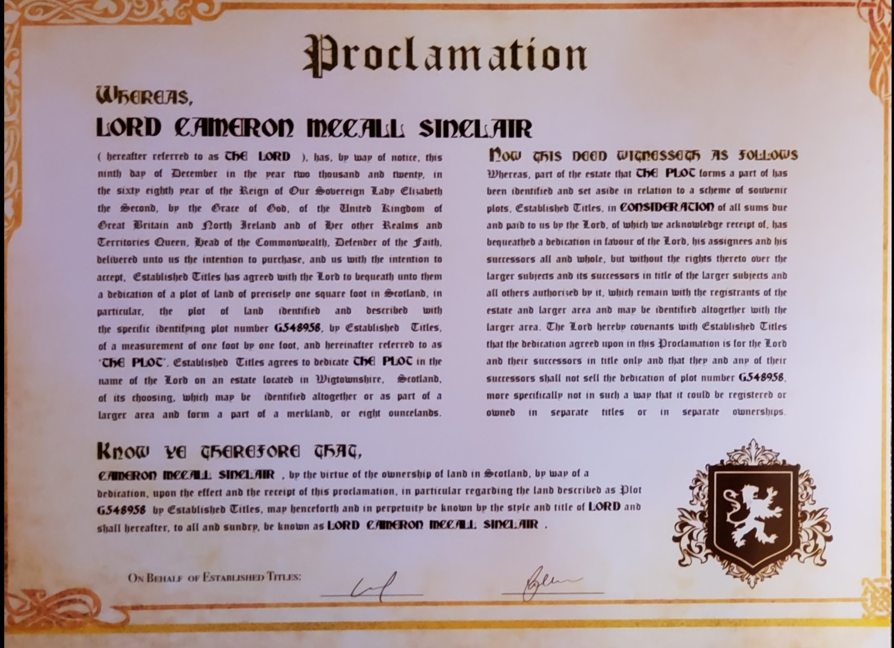

Lord Cameron Sinclair (yes, really)

Hello there! My name's Cameron Sinclair, but I usually go by Sinclair.
I come from a small town called Reidsville, North Carolina. I'm a senior this year at UNCC, and I'm graduating at the end of the summer,
and finally getting that long awaited computer science degree. In my free time, I like to play electric guitar, do woodworking, bake sourdough bread, play video games, or build lightsabers.
I'm obviously a bit of a Star Wars fan. I'm told by a lot of my friends, family, and coworkers that I'm a "people person", which is a sentiment I very much agree with.
I think that during the COVID lockdown, when I was at home doing online classes, I learned the limits of my introversion.
I learned that if I am to be fulfilled, I need to work in an environment around other people, and that I didn't want to work behind a screen alone all day every day.